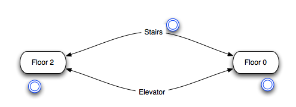
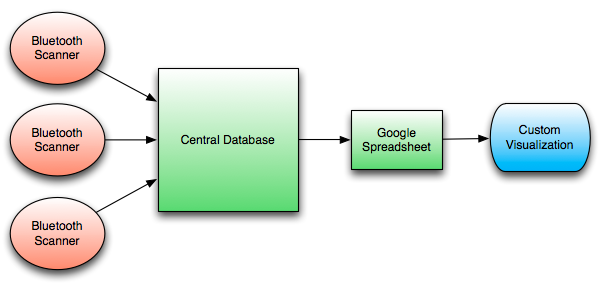

Stairs or elevator? Use bluetooth!
Most people carry mobile phones, and many of those phones have integrated bluetooth functionality. Some of these phones are in discoverable mode, making them detectable by other bluetooth devices (Note: many new phones disable discoverable mode on a timer). By building and deploying such scanners in a bluetooth sensor network, we can collect a lot of interesting information about people's behavior in public places. This post is about a minimal compelling application of this technology.
Unfortunately we had just 3 makeshift internet-enabled bluetooth sensor nodes at our disposal. Under this constraint, we brainstormed several interesting scenarios where a bluetooth sensor network can be used to collect data, for example:
- People's movement patterns in a bar district
- Tourists following informational signs to points of interest
- Passengers riding a public bus system
- Travel between floors in a building
We decided to study patterns of travel (ie. climbing stairs vs. taking the elevator) between two floors of a university building. We installed three sensors: two on separate floors, and the third on the stairwell connecting them (blue circles represent bluetooth scanner nodes in the bluetooth sensor network).

This is a specific example of a more general point-to-point problem with two possible paths. From this simple setup, It's possible to compute whenever a trip was made from floor A to floor B, and whether or not the traveler took the stairs or the elevator. Suppose that there was a trip from A to B. If the trip was also made through C, it must have been made via stairs, otherwise, it must have been made via elevator. Based on this basic data, we can infer a number of features, some of which are:
- Popularity of each route (ex. stairs more popular in the morning)
- Habit (ex. people that take the elevator always take the elevator)
- Temporal patterns (ex. some people consistently take the elevator in the morning)
- Duration of trips (ex. stairs down is faster, elevator up is faster)
- Waiting time at each terminal (ex. waiting times higher for elevator)
- Direction preferences (ex. many people prefer to take elevator up, stairs down)
Unfortunately this project finished before any data was actually collected! Luckily, the implementation is ready for use if you want to take over! The following describes a simple implementation using EeePCs or MacMinis:
Implementing the Sensor Network
The sensor network necessary for the inter-floor experiment consists of several components:

Each scanner is a computer with a bluetooth modem and a wireless connection. We used two Mac Minis running OS X and one ASUS EeePC running Linux. Every computer executed a bluetooth scanner program, which scanned for bluetooth devices in the vicinity every 10 seconds, and updated its list of nearby device IDs. Whenever the list of nearby devices changed, it reported an ENTER or EXIT notification to the central server via an HTTP POST.
The central server runs a MySQL database to store all notifications from the scanners. Periodically, this analyzer program crawls the database to extract trips from the data (ie. a device EXITs at one sensor and subsequently ENTERs at another one). It also discerns between trips taken by stairs and by elevator. Once trips are extracted, they are appended to a Google Spreadsheet. This happens in "delayed realtime", since a trip can only be inferred once the start and endpoint are known.
The final component is a custom visualization written using Raphael and the Google Visualization framework. This JavaScript program polls the spreadsheet every 10 seconds to see if any new trips were added. If new trips were found, the visualization would update itself, representing each trip as a circle moving from one terminal to another along the stairs or elevator path. In addition, this visualization stores a frequency chart over time to show how popular each of the possible paths are.
For more information on related projects, check out Vassilis' work at UMa.